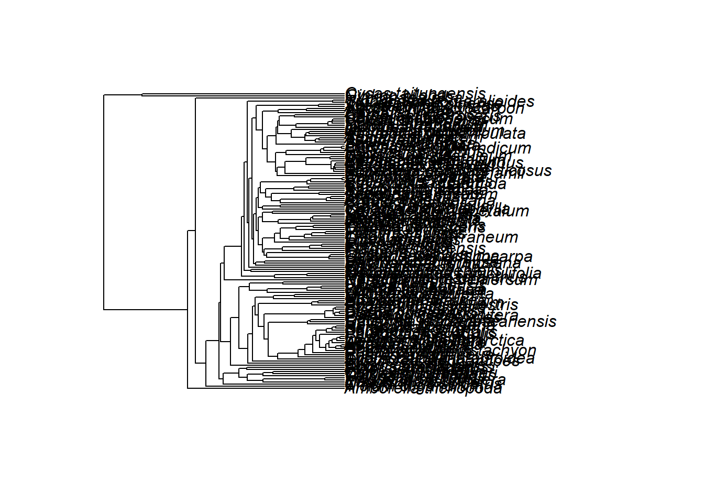
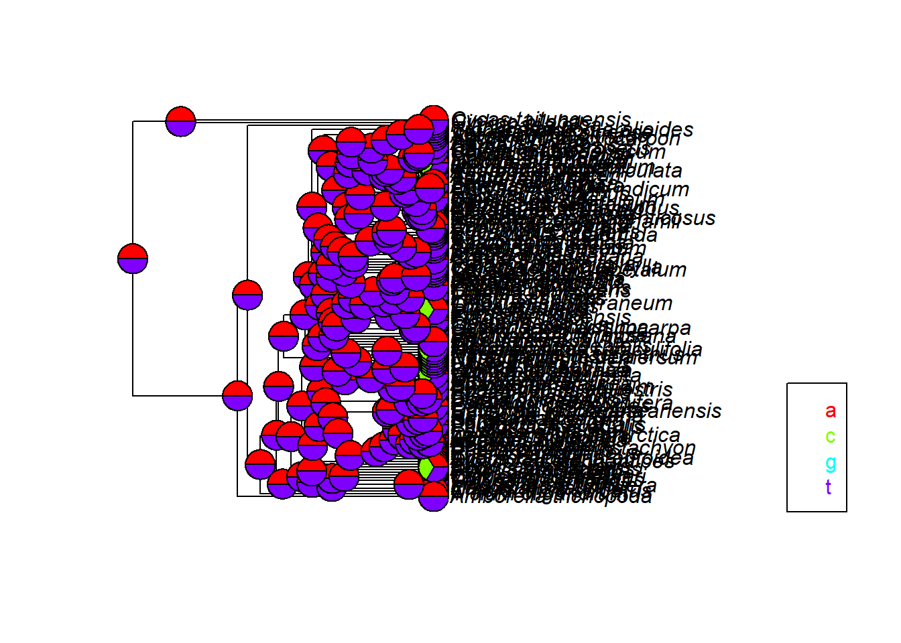
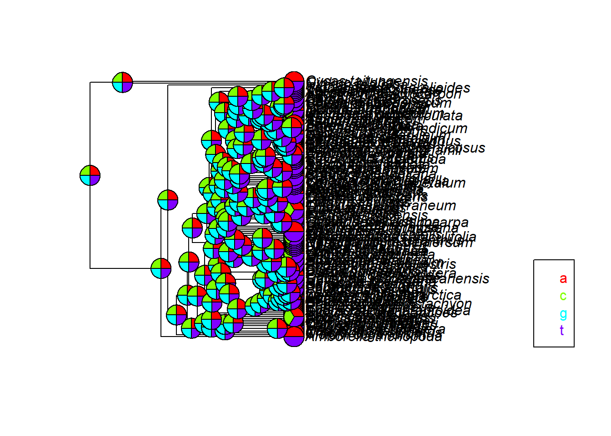

For this exercise, explore looking at discrete character models. Note: they are not “discreet” character models – they’re actually pretty noisy.
Remember for homework,
git remote -v gives list of remotes
git fetch upstream
git pull upstream master pulls from upstream (me).
change eval=TRUE for all the R blocks, debug, commit, and do a pull request.
These are useful packages in this area (far from exhaustive list).
library(ape)## Warning: package 'ape' was built under R version 3.4.3library(geiger)
library(phytools)## Warning: package 'phytools' was built under R version 3.4.3## Loading required package: maps## Warning: package 'maps' was built under R version 3.4.3library(phangorn)## Warning: package 'phangorn' was built under R version 3.4.3library(corHMM)## Warning: package 'corHMM' was built under R version 3.4.3## Loading required package: nloptr## Loading required package: GenSA## Warning: package 'GenSA' was built under R version 3.4.3You’ll need to get data into R in some way.
library(rotl)## Warning: package 'rotl' was built under R version 3.4.3tree <- rotl::get_study_tree(study_id="ot_859", tree_id=rotl::get_tree_ids(rotl::get_study_meta("ot_859")))
discrete.data <- read.csv(file="C:/Users/Erika/Documents/phylomethinfo/phylometh_discrete/GlobalWoodinessDatabase.csv", stringsAsFactors=FALSE) #death to factors.Data are often not right in some way. They might not match the taxa in your tree, there may be missing data, etc. geiger::treedata is a great function for getting a tree and data that match, but your data may need other cleaning. Do it as a function so it’s repeatable.
library(taxize)## Warning: package 'taxize' was built under R version 3.4.3##
## Attaching package: 'taxize'## The following objects are masked from 'package:rotl':
##
## synonyms, tax_name, tax_rank gnr.data <- gnr_datasources()
gnr.source <- gnr.data[gnr.data$title=="NCBI", "id"]
new.tree.names <- taxize::gnr_resolve(tree$tip.label, data_source=gnr.source, best_match_only =TRUE)$matched_name
# print(cbind(tree$tip.label, new.tree.names))
tree$tip.label <- new.tree.names
library(geiger)
data.names <- discrete.data$gs
actual.data <- data.frame(woodiness=discrete.data[, "woodiness"], stringsAsFactors = FALSE)
rownames(actual.data) <- data.names
cleaned.result<- treedata(phy=tree,data=actual.data,sort=TRUE)## Warning in treedata(phy = tree, data = actual.data, sort = TRUE): The following tips were not found in 'data' and were dropped from 'phy':
## Acidosasa purpurea
## Ageratina adenophora
## Allosyncarpia ternata
## Aralia undulata
## Ardisia polysticta
## Arundinaria appalachiana
## Asclepias nivea
## Bambusa emeiensis
## Berberis bealei
## Boea
## Coix
## Corallorhiza striata var. vreelandii
## Corynocarpus laevigatus
## Dasypogon bromeliifolius
## Dendrobium
## Dendrocalamus latiflorus
## Erodium carvifolium
## Fagopyrum esculentum subsp. ancestrale
## Ferrocalamus rimosivaginus
## Fritillaria taipaiensis
## Geranium palmatum
## Guizotia abyssinica
## Hypseocharis bilobata
## Indocalamus longiauritus
## Jacobaea vulgaris
## Leersia tisserantii
## Melianthus villosus
## Monsonia speciosa
## Musa textilis
## Nothofagus
## Nuphar advena
## Oenothera argillicola
## Olea europaea subsp. europaea
## Oncidium hybrid cultivar
## Origanum vulgare subsp. vulgare
## Orites excelsus
## Oryza rufipogon
## Pachycladon cheesemanii
## Parthenium argentatum
## Pelargonium alternans
## Pentactina rupicola
## Pinguicula ehlersiae
## Praxelis clematidea
## Prunus kansuensis
## Rhynchoryza subulata
## Saccharum
## Sedum sarmentosum
## Trigonobalanus doichangensis
## Trithuria inconspicua
## Triticum monococcum
## Veratrum patulum
## Vigna radiata
## Zingiber spectabile## Warning in treedata(phy = tree, data = actual.data, sort = TRUE): The following tips were not found in 'phy' and were dropped from 'data':
## Aa paleacea
## Abarema adenophora
## Abarema barbouriana
## Abarema campestris
## Abarema curvicarpa
## Abarema jupunba
## Abarema macradenia
## Abarema mataybifolia
## Abatia americana
## Abatia boliviana
## Abatia canescens
## Abatia mexicana
## Abatia parviflora
## Abatia rugosa
## Abatia spicata
## Abatia stellata
## Abdominea minimiflora
## Abelia biflora
## Abelia chinensis
## Abelia dielsii
## Abelia integrifolia
## Abelia mosanensis
## Abelia serrata
## Abelia spathulata
## Abelia triflora
## Abelia zanderi
## Abeliophyllum distichum
## Abelmoschus esculentus
## Abelmoschus ficulneus
## Abelmoschus manihot
## Abelmoschus moschatus
## Abies alba
## Abies amabilis
## Abies balsamea
## Abies borisii-regis
## Abies bornmuelleriana
## Abies bracteata
## Abies cephalonica
## Abies chensiensis
## Abies cilicica
## Abies concolor
## Abies delavayi
## Abies densa
## Abies durangensis
## Abies fabri
## Abies fargesii
## Abies firma
## Abies forrestii
## Abies fraseri
## Abies grandis
## Abies guatemalensis
## Abies holophylla
## Abies homolepis
## Abies kawakamii
## Abies koreana
## Abies lasiocarpa
## Abies magnifica
## Abies mariesii
## Abies marocana
## Abies nebrodensis
## Abies nephrolepis
## Abies nordmanniana
## Abies numidica
## Abies pardei
## Abies pindrow
## Abies pinsapo
## Abies procera
## Abies recurvata
## Abies religiosa
## Abies sachalinensis
## Abies shastensis
## Abies sibirica
## Abies spectabilis
## Abies squamata
## Abies veitchii
## Abies vejarii
## Abildgaardia ovata
## Abobra tenuifolia
## Abolboda poarchon
## Abrahamia deflexa
## Abroma augustum
## Abromeitiella lorentziana
## Abronia bigelovii
## Abronia carletonii
## Abronia villosa
## Abrophyllum ornans
## Abrotanella emarginata
## Abrotanella linearis
## Abrus precatorius
## Abuta grandifolia
## Abuta grisebachii
## Abuta imene
## Abuta pahni
## Abuta panamensis
## Abuta panurensis
## Abuta racemosa
## Abuta rufescens
## Abuta sandwithiana
## Abuta solimoesensis
## Abutilon angulatum
## Abutilon auritum
## Abutilon cryptopetalum
## Abutilon fraseri
## Abutilon fruticosum
## Abutilon indicum
## Abutilon micropetalum
## Abutilon otocarpum
## Abutilon pannosum
## Abutilon theophrasti
## Acacallis cyanea
## Acacallis fimbriata
## Acacia acanthophylla
## Acacia acradenia
## Acacia acuminata
## Acacia adenocalyx
## Acacia adoxa
## Acacia adsurgens
## Acacia adunca
## Acacia aestivalis
## Acacia albicorticata
## Acacia albida
## Acacia alleniana
## Acacia altiscandens
## Acacia amblyophylla
## Acacia ammobia
## Acacia ampliata
## Acacia ampliceps
## Acacia amythethophylla
## Acacia ancistrocarpa
## Acacia aneura
## Acacia anfractuosa
## Acacia angusta
## Acacia angustissima
## Acacia anthochaera
## Acacia arabica
## Acacia arafurica
## Acacia argyraea
## Acacia armitii
## Acacia aroma
## Acacia arrecta
## Acacia assimilis
## Acacia ataxacantha
## Acacia atkinsiana
## Acacia atramentaria
## Acacia aulacocarpa
## Acacia auriculiformis
## Acacia ausfeldii
## Acacia baileyana
## Acacia bakeri
## Acacia bancroftiorum
## Acacia berlandieri
## Acacia bidwillii
## Acacia binervata
## Acacia binervia
## Acacia bivenosa
## Acacia blakelyi
## Acacia boliviana
## Acacia bonariensis
## Acacia borleae
## Acacia brachybotrya
## Acacia brachystachya
## Acacia brevispica
## Acacia brumalis
## Acacia bulgaensis
## Acacia burkei
## Acacia burkittii
## Acacia caesiella
## Acacia caffra
## Acacia calcicola
## Acacia cambagei
## Acacia cana
## Acacia cangaiensis
## Acacia cardiophylla
## Acacia carneorum
## Acacia caroleae
## Acacia catechu
## Acacia caven
## Acacia celastrifolia
## Acacia chartacea
## Acacia chisholmii
## Acacia chundra
## Acacia cincinnata
## Acacia citrinoviridis
## Acacia clunies-rossiae
## Acacia cochliacantha
## Acacia cognata
## Acacia colei
## Acacia colletioides
## Acacia collinsii
## Acacia complanata
## Acacia concurrens
## Acacia conferta
## Acacia confusa
## Acacia conspersa
## Acacia coolgardiensis
## Acacia coriacea
## Acacia cornigera
## Acacia covenyi
## Acacia cowaniana
## Acacia cowleana
## Acacia craspedocarpa
## Acacia crassa
## Acacia crassicarpa
## Acacia cretacea
## Acacia cretata
## Acacia cultriformis
## Acacia curassavica
## Acacia cuspidifolia
## Acacia cuthbertsonii
## Acacia cyanophylla
## Acacia cyclops
## Acacia cyperophylla
## Acacia davyi
## Acacia dawsonii
## Acacia dealbata
## Acacia deanei
## Acacia debilis
## Acacia decora
## Acacia decurrens
## Acacia delibrata
## Acacia demissa
## Acacia dempsteri
## Acacia desertorum
## Acacia desmondii
## Acacia dictyophleba
## Acacia didyma
## Acacia dietrichiana
## Acacia difficilis
## Acacia difformis
## Acacia dimidiata
## Acacia ditricha
## Acacia dodonaeifolia
## Acacia donaldsonii
## Acacia doratoxylon
## Acacia dunnii
## Acacia duriuscula
## Acacia echinuliflora
## Acacia elata
## Acacia ephedroides
## Acacia eremaea
## Acacia eriocarpa
## Acacia erioloba
## Acacia eriopoda
## Acacia erubescens
## Acacia estrophiolata
## Acacia excelsa
## Acacia exilis
## Acacia exuvialis
## Acacia falcata
## Acacia falciformis
## Acacia farnesiana
## Acacia fasciculifera
## Acacia fauntleroyi
## Acacia ferruginea
## Acacia filicifolia
## Acacia fimbriata
## Acacia floribunda
## Acacia floydii
## Acacia frigescens
## Acacia fulva
## Acacia furcatispina
## Acacia galeata
## Acacia galpinii
## Acacia gardneri
## Acacia gaumeri
## Acacia genistifolia
## Acacia georgensis
## Acacia georginae
## Acacia gerrardii
## Acacia gibbosa
## Acacia gillii
## Acacia glaucocaesia
## Acacia glaucocarpa
## Acacia glaucoptera
## Acacia glomerosa
## Acacia goetzei
## Acacia gonoclada
## Acacia gracillima
## Acacia grandicornuta
## Acacia grasbyi
## Acacia grayana
## Acacia greggii
## Acacia haematoxylon
## Acacia hakeoides
## Acacia hammondii
## Acacia harpophylla
## Acacia havilandiorum
## Acacia hayesii
## Acacia hebeclada
## Acacia hemignosta
## Acacia hemsleyi
## Acacia hereroensis
## Acacia heteroclita
## Acacia hindsii
## Acacia holosericea
## Acacia holotricha
## Acacia homalophylla
## Acacia howittii
## Acacia huegelii
## Acacia hyaloneura
## Acacia implexa
## Acacia inophloia
## Acacia intorta
## Acacia irrorata
## Acacia ixodes
## Acacia jamesiana
## Acacia jennerae
## Acacia jensenii
## Acacia jibberdingensis
## Acacia jucunda
## Acacia julifera
## Acacia karroo
## Acacia kelleri
## Acacia kempeana
## Acacia kenneallyi
## Acacia kettlewelliae
## Acacia koa
## Acacia laccata
## Acacia lasiocalyx
## Acacia latescens
## Acacia latifolia
## Acacia latzii
## Acacia legnota
## Acacia leiocalyx
## Acacia leiophylla
## Acacia leptoloba
## Acacia leptostachya
## Acacia leucoclada
## Acacia leucophloea
## Acacia ligulata
## Acacia ligustrina
## Acacia linearifolia
## Acacia linearis
## Acacia lineata
## Acacia loderi
## Acacia longifolia
## Acacia longissima
## Acacia loretensis
## Acacia loroloba
## Acacia luederitzii
## Acacia lutea
## Acacia lycopodiifolia
## Acacia lysiphloia
## Acacia mabellae
## Acacia macdonnellensis
## Acacia maconochieana
## Acacia macracantha
## Acacia macradenia
## Acacia macrostachya
## Acacia maidenii
## Acacia maitlandii
## Acacia mangium
## Acacia masliniana
## Acacia mathuataensis
## Acacia matthewii
## Acacia mayana
## Acacia mearnsii
## Acacia meiosperma
## Acacia melanoceras
## Acacia melanoxylon
## Acacia mellifera
## Acacia merinthophora
## Acacia microbotrya
## Acacia mimula
## Acacia minutifolia
## Acacia modesta
## Acacia montana
## Acacia monticola
## Acacia montis-usti
## Acacia mountfordiae
## Acacia mucronata
## Acacia muelleriana
## Acacia multisiliqua
## Acacia multistipulosa
## Acacia muricata
## Acacia murrayana
## Acacia myrtifolia
## Acacia nebrownii
## Acacia neriifolia
## Acacia neurocarpa
## Acacia neurophylla
## Acacia nigrescens
## Acacia nilotica
## Acacia nitidula
## Acacia notabilis
## Acacia nuperrima
## Acacia nyssophylla
## Acacia obliquinervia
## Acacia obtusifolia
## Acacia oldfieldii
## Acacia olgana
## Acacia omalophylla
## Acacia oncinocarpa
## Acacia oraria
## Acacia orites
## Acacia orthocarpa
## Acacia oshanesii
## Acacia oswaldii
## Acacia oxycedrus
## Acacia pachyacra
## Acacia pachycarpa
## Acacia pachyphloia
## Acacia pallidifolia
## Acacia palustris
## Acacia paniculata
## Acacia papyrocarpa
## Acacia paradoxa
## Acacia parramattensis
## Acacia parvipinnula
## Acacia pataczekii
## Acacia pellita
## Acacia pendula
## Acacia pennata
## Acacia penninervis
## Acacia pentadenia
## Acacia perangusta
## Acacia permixta
## Acacia petraea
## Acacia peuce
## Acacia phlebophylla
## Acacia phyllodes
## Acacia picachensis
## Acacia pickardii
## Acacia platycarpa
## Acacia plectocarpa
## Acacia podalyriifolia
## Acacia polifolia
## Acacia polyacantha
## Acacia polyphylla
## Acacia praecox
## Acacia prainii
## Acacia pravissima
## Acacia prominens
## Acacia pruinocarpa
## Acacia pruinosa
## Acacia pubescens
## Acacia pubicosta
## Acacia pubifolia
## Acacia pubirhachis
## Acacia pulchella
## Acacia purpurea
## Acacia pycnantha
## Acacia pycnostachya
## Acacia cleaned.tree <- cleaned.result$phy
cleaned.data <- cleaned.result$data
#treedata() in Geiger is probably my favorite function in R
# Now write the code to use CleanData() to actually clean your dataIt’s critically important to LOOK at what you have. Are there weird values? Has the match between taxa and state gone correctly? Do you think you have binary data, but there’s actually only state 1? Especially as data sets grow (yay), and are assembled using scripts rather than by error-prone, non-reproducable hands (double yay), scientists are increasingly less likely to deeply look at our data. That’s bad – don’t be that person.
plot(cleaned.tree)
print(t(t(table(cleaned.data))))##
## cleaned.data [,1]
## H 70
## W 72 #Important here is to LOOK at your data before running it. Any weird values? Does it all make sense? What about your tree? Polytomies?
# Now write the code to use VisualizeData() to actually look at your dataFirst, let’s use parsimony to look at ancestral states:
cleaned.discrete.phyDat <- phangorn::phyDat(cleaned.data, type="DNA") #phyDat is a data format used by phangorn
anc.p <- phangorn::ancestral.pars(cleaned.tree, cleaned.discrete.phyDat)
plotAnc(cleaned.tree, anc.p, 1)
Do you see uncertainty? What does it mean?
Now, plot the likelihood estimates.
anc.ml <- ancestral.pml(pml(cleaned.tree, cleaned.discrete.phyDat), type="ml")
plotAnc(cleaned.tree, anc.ml, 1) ## Parsimony - the best hypothesis is the one that requires the fewest evolutionary changes How does this differ from parsimony? - likelihood differs from parsimony since it accounts for all changes compared to the few changes seen with parsimony Why does it differ from parsimony? - Because parismony accounts for the hypothesis with the fewest evolutionary changes, and likelihood is the probability of all data What does uncertainty mean? - Uncertainty is the possible error that could occur, excluding lack of data
I DON’T KNOW HOW TO DO THIS Now, to the biological questions. For many of these, corHMM will be a useful package.